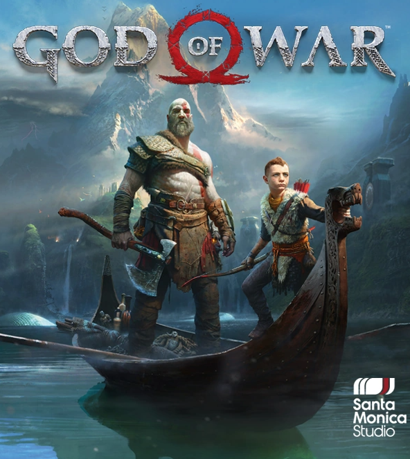
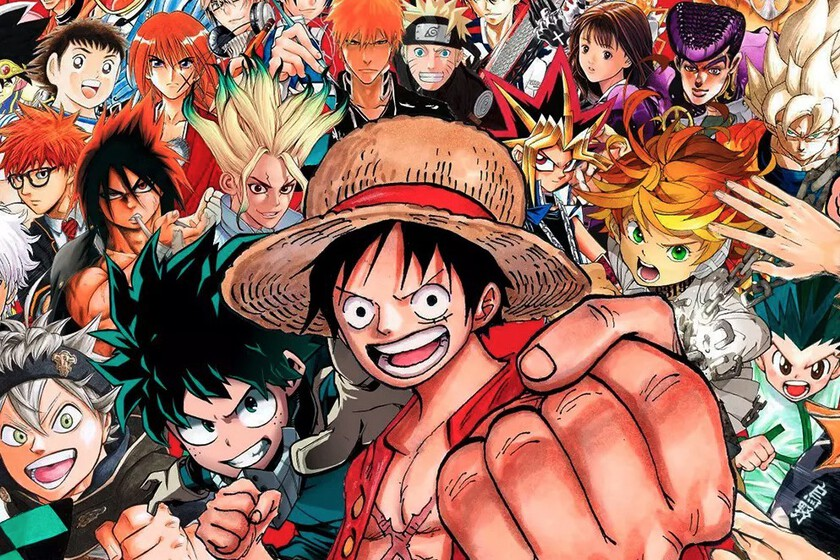
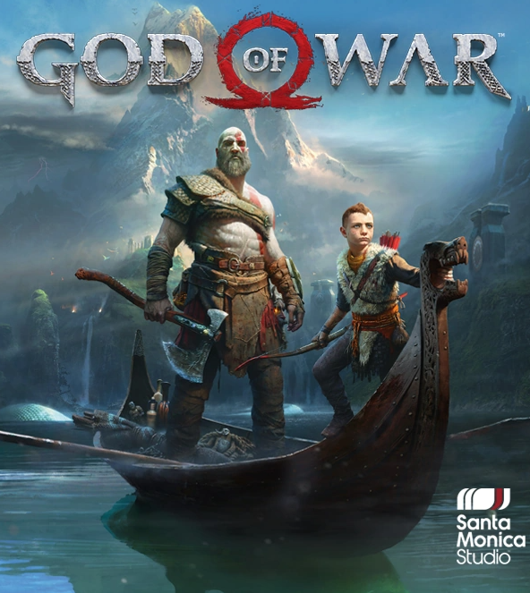
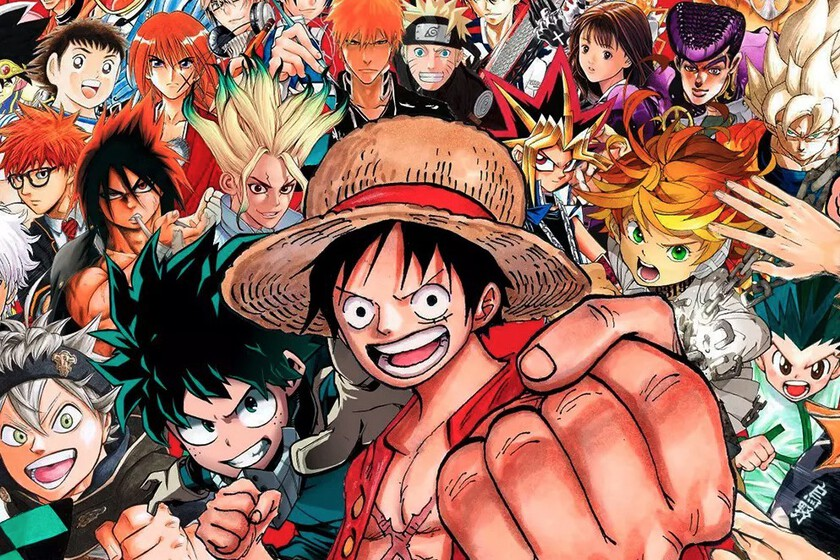

Mis hobbies...
En mis ratos libres cuando no hago juegos una de las cosas que hago
es probar sagas de juegos que nunca he jugado
Otras veces leo mangas que tengo pendientes por leer uno de los que mas me gusta leer es Food Wars
En mis ratos libres cuando no hago juegos una de las cosas que hago
es probar sagas de juegos que nunca he jugado
Otras veces leo mangas que tengo pendientes por leer uno de los que mas me gusta leer es Food Wars
